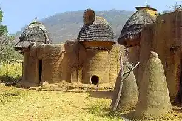

"The desire to create is one of the deepest yearnings of the human soul. No matter our talents, education, or backgrounds, each of us has an inherent wish to create something that did not exist before."
— Dieter F. Uchtdorf (Happiness, Your Heritage)
A Unique Cultural Diversity
From the southern coastline bordered by the Atlantic to the northern savannas, Togo is home to around fifty ethnic groups. Each enriches the national heritage with its unique weaving techniques, pottery, ritual sculptures, and memorable celebrations.
This platform is dedicated to preserving, promoting, and making this artistic richness accessible to a global audience, creating a bridge between local creators and cultural enthusiasts.

Don't Miss
The Épé-Ékpé Festival is Approaching
Discover the history of the sacred stone of the Guin people in our dedicated section.
Learn more about festivals →